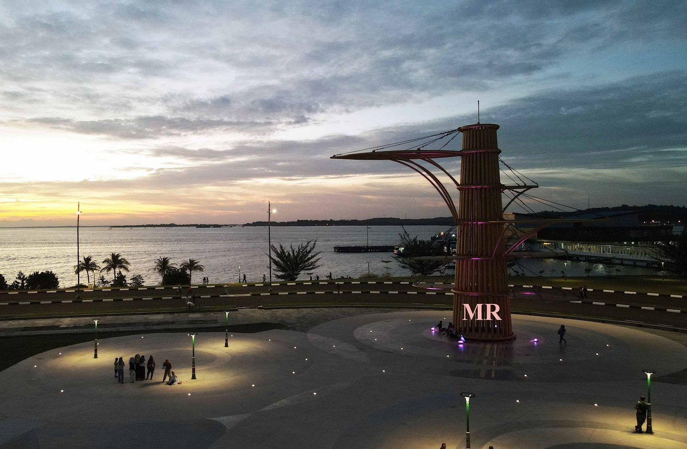
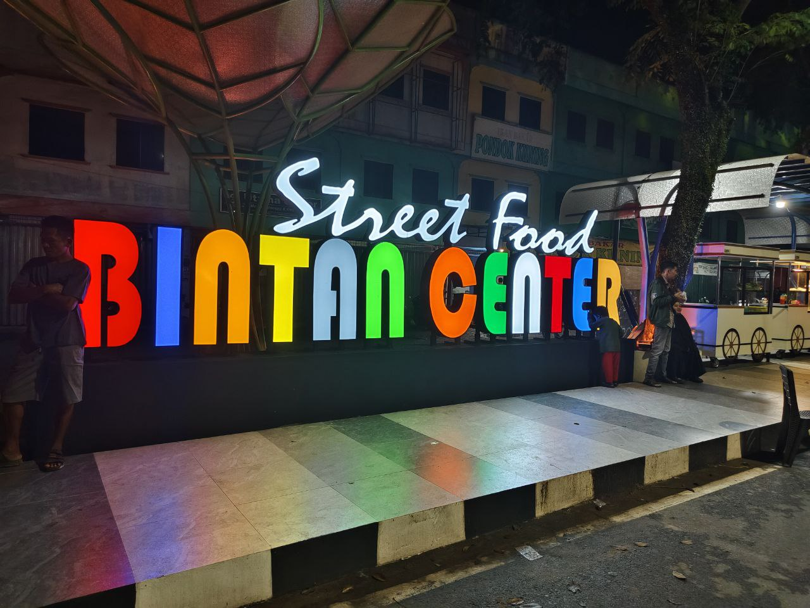
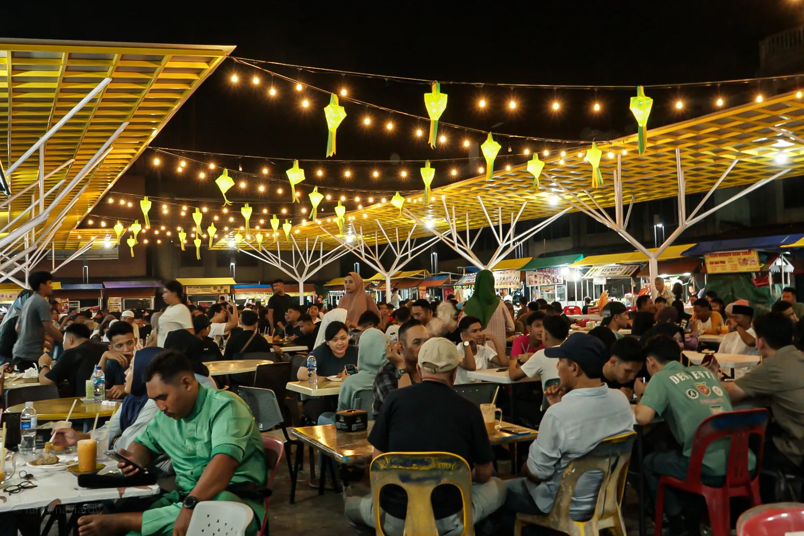
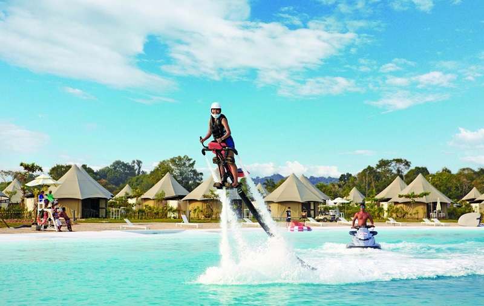
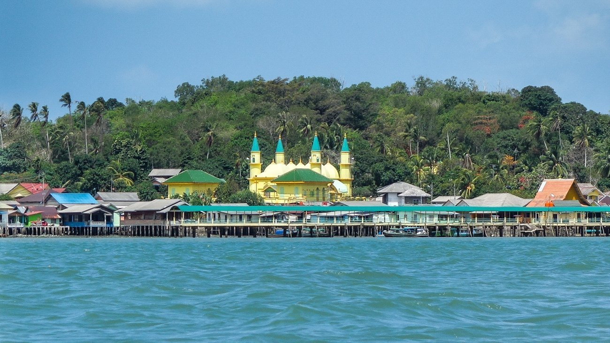

SEJARAH
Berdasarkan Sulalatus Salatin, Tanjungpinang merupakan bagian dari Kerajaan Malaka. Setelah jatuhnya Malaka ke tangan Portugal, Sultan Mahmud Syah menjadikan kawasan ini sebagai pusat pemerintahan Kesultanan Malaka. Kemudian menjadi pusat pemerintahan Kesultanan Johor, sebelum diambil alih oleh Belanda setelah mereka menundukan perlawanan Raja Haji Fisabilillah tahun 1784 di Pulau Penyengat. Pada masa Hindia Belanda, Tanjungpinang merupakan pusat pemerintahan Karesidenan Riouw. Kemudian di awal kemerdekaan Indonesia, menjadi ibu kota Provinsi Riau. Pada tahun 1957, Tanjungpinang menjadi ibu kota Provinsi Riau. Namun dua tahun kemudian ibu kota propinsi itu dipindahkan ke Pekanbaru. Setelah itu statusnya menjadi Kota Administratif hingga tahun 2000. Berdasarkan UU Nomor 5 Tahun 2001, pada tanggal 21 Juni 2001 statusnya ditingkatkan menjadi Kota Tanjungpinang. Pusat pemerintahan yang semula berada di pusat Kota Tanjungpinang, kemudian dipindahkan ke Senggarang (bagian utara kota). Hal ini bertujuan untuk pemerataan pembangunan serta mengurangi kepadatan penduduk yang selama ini berpusat di Kota Lama (bagian barat kota). Pada tahun 2002, Kota Tanjungpinang kembali menjadi ibu kota provinsi, yakni Provinsi Kepulauan Riau.
- Baju adat TanjungPinang
- Letak Strategis TanjungPinang

Pakaian tradisional Kepulauan Riau sering ditemukan pada ragam pakaian tradisional kebaya labuh dan teluk belanga yang menjadi pakaian tradisi Kepulauan Riau saat ini. Indonesia memang terkenal akan keberagaman budaya dan kemegahannya, seperti megahnya Rumah Ekslusif dari Pinhome contohnya Alora Springhil dan Daun Village.

Kota Tanjungpinang berada di Pulau Bintan, Provinsi Kepulauan Riau dengan letak geografis berada pada 0°51' sampai dengan 0°59' Lintang Utara dan 104°23' sampai dengan 104°34' Bujur Timur. Wilayah Kota Tanjungpinang memiliki luas wilayah sekitar 239, 5 kilometer persegi dan sebagiannya merupakan wilayah perairan laut. Sebagian wilayah Tanjungpinang merupakan dataran rendah, kawasan rawa bakau, dan sebagian lain merupakan perbukitan, sehingga lahan kota sangat bervariasi dan berkontur.
KULINER
Kami akan menyarankan anda beberapa kuliner TanjungPinang !
- Street Food Tepi laut 
- Bintan Centre Street Food 
- Akau 
TPL (Tepi laut) tempat ini memang populer dikalangan anak muda tanjungpinang. Tempat ini paling sering dikunjungi, selain makanannya yang bermacam' Tpl juga bisa dibuat untuk melihat sunset yang indah.
Bincen (Bintan Centre) juga tak kalah populer, tempat ini sangat di recommendasikan Sebagai tempat "malmingan", selain Tempatnya yang tak kalah indahnya dengan Tpl, makanannya yang enak-enak, tempat nya yg aestetic, cocok deh buat kamu yg hobi malmingan.
Nahh, kalo inii cocok buat kamuu yang mauu makan makanan khas TanjungPinang. Di akau berlimpah makanan makanan khas tanjungpinang.
WISATA
- Treasure Bay Bintan 
- Pulau Penyengat 
- Pantai Trikora
Treasure Bay Bintan berada di kawasan Lagoi, atau berjarak sekitar satu jam perjalanan dari pusat kota Tanjungpinang. Kolam renang terbesar di Asia Tenggara itu tepatnya berada di dalam kawasan wisata Chill Cove, yaitu sebuah taman rekreasi terpadu yang berlokasi di dalam kawasan tersebut. Salah satu atraksi utamanya ialah Crystal Lagoon, merupakan laguna terbesar di kawasan Asia Tenggara dengan penampakannya yang cantik dan sangat menggoda mata. Dari ujung kanan ke ujung kiri mata akan dimanjakan dengan warna biru jernih. Berada di kolam ini, pengunjung dapat merasakan sensasi berenang di laut tanpa takut dengan ombak tinggi. Pengunjung dapat bermain olahraga air seperti berdiri di paddle board, berlayar dengan perahu transparan, bahkan flyboard ride. Kolam renang ini pun dilengkapi dengan wahana perosoton yang diberi nama Slip and Slide.
Pulau Penyengat, atau dikenal juga sebagai Pulau Penyengat Inderasakti, adalah sebuah pulau kecil yang terletak di Kota Tanjungpinang, Kepulauan Riau, Indonesia. Pulau ini memiliki luas sekitar 2 km² dan terletak sekitar 35 km dari Pulau Batam, dapat dijangkau dengan perahu bermotor dalam waktu sekitar 15 menit dari pusat Kota Tanjungpinang.

Pantai Trikora 4 sering dijadikan pilihan warga setempat untuk menikmati akhir pekan. Selain menjadi salah satu pantai terpanjang di Bintan, tempat ini juga menjadi favorit wisatawan asing. Nama "Trikora" sendiri berasal dari sebutan "Three Corals" yang dipopulerkan oleh para pelancong mancanegara.